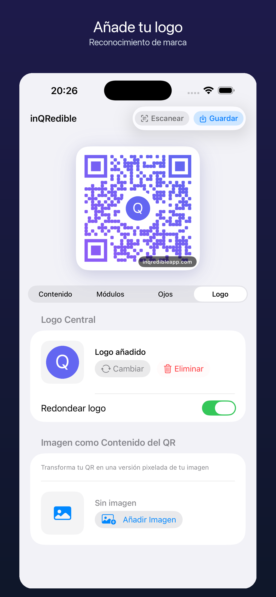

Pequeños negocios
Añade logo a QR de menú, reservas, pagos, contacto o reseñas.
QR de marca
inQRedible te ayuda a crear QR de marca para enlaces, Wi-Fi, vCard, eventos, redes sociales o códigos de barras. Añade logo, colores, formas y ojos QR, y exporta un PNG limpio para web, imprenta o redes.

Cómo funciona
Un QR con logo funciona mejor cuando la marca se ve, pero el lector conserva contraste, espacio y estructura suficientes. inQRedible te da controles visuales con un flujo nativo de iPhone.
Ideal para
Añade logo a QR de menú, reservas, pagos, contacto o reseñas.
Diseña QR de redes, vídeo, música y landing para publicaciones o merchandising.
Exporta QR para carteles, entradas, presentaciones, mapas o calendario.